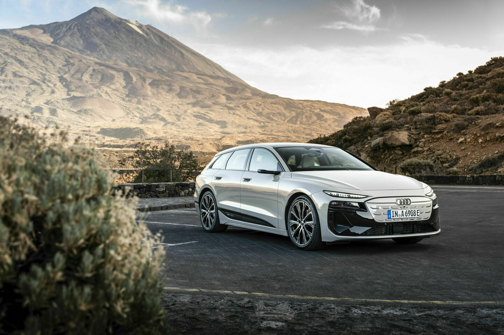
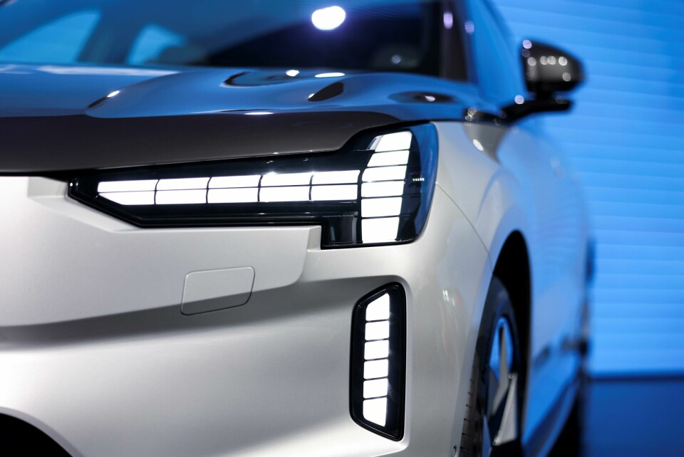
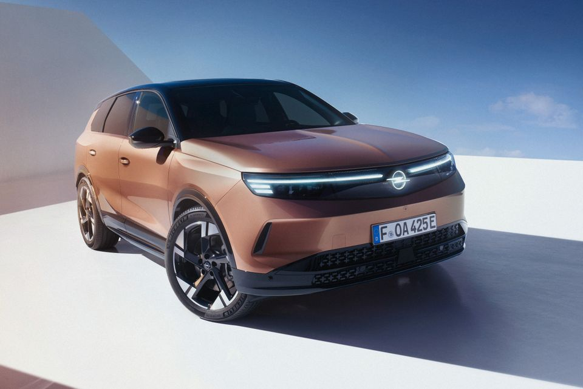

车头那条最醒目的细灯带，未必是夜里照路的主灯。日行灯帮助其他人注意到车辆，近光和远光负责道路照明，转向灯传递方向意图。迎宾动画的用途又不同。它们可以容纳在同一灯组里，但不能只凭发光轮廓判断使用效果。[1][2]
Audi A6 e-tron：灯组布置

A6 e-tron 的团队希望车头低而扁，主要照明部件却需要空间。他们把较大的部件融入暗色面罩，让上部日行灯维持纤细。[3]
明亮细线先被注意到，大部件在黑色背景中不那么突出。这种视觉主次配合了技术布置，但不能证明照明更好，也不能从主灯位置推断眩光更少。
Volvo EX90：开合结构

EX90 把较大的远光模块放在 T 形灯带后方，让横向部分上下分开，为模块让路。开合也被做成了类似睁眼的迎宾效果。[4][5]
团队为保留简洁外观增加了结构复杂度。迎宾动画则有不同的用户反馈：公开讨论中，有人觉得点亮突兀，也有人喜欢。几条自述不代表整体偏好，但触发时机与频率确实是实际使用中需要考虑的条件。[6]
Opel Grandland：光束控制

Opel 说明，其 Intelli-Lux HD 系统用摄像头识别前方及对向交通，再调整照射区域，目标是兼顾道路照明与对其他人的干扰。这个机制与前脸发光图形的造型不同，不能用标志的辨识度代替照明评价。厂商说明也需要独立测试来验证效果。[7]
夜间照明测试
IIHS 同时评价照明与对向眩光。美规 EX90 所列 2025—2026 年款配置获 A（可接受）：近光在测试条件下未超眩光限值，但缓左弯照明不足。该结果不能套给其他市场的不同配置，也没有评价迎宾动画或行人的观看舒适度。[8][1]